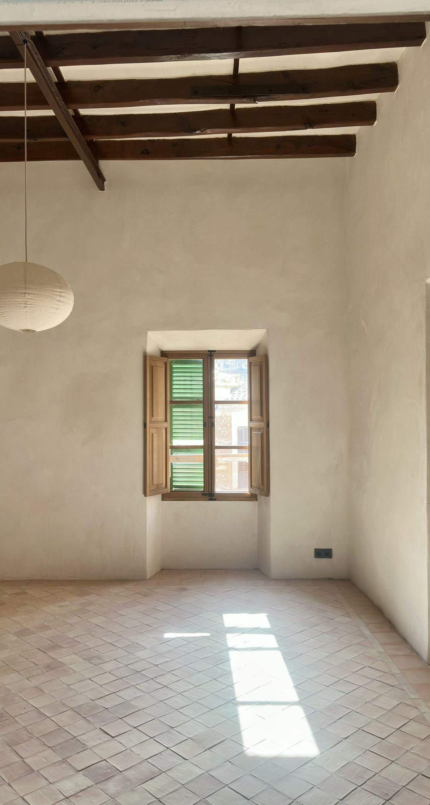
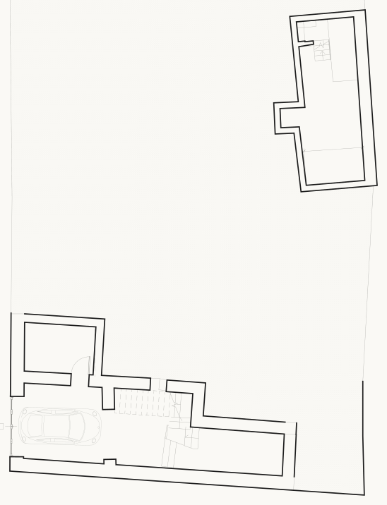
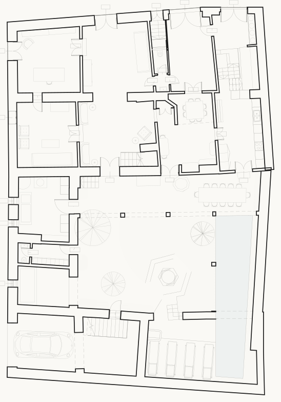
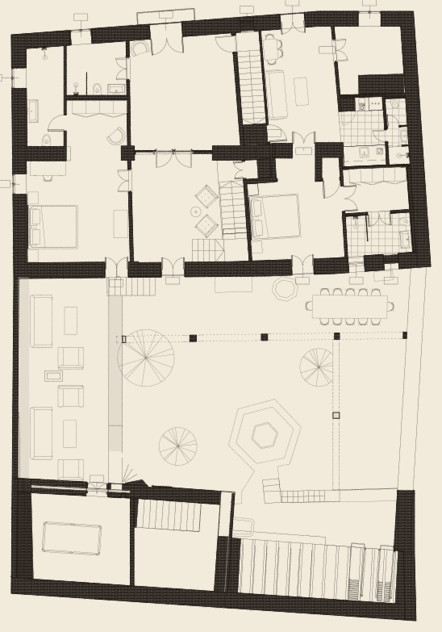
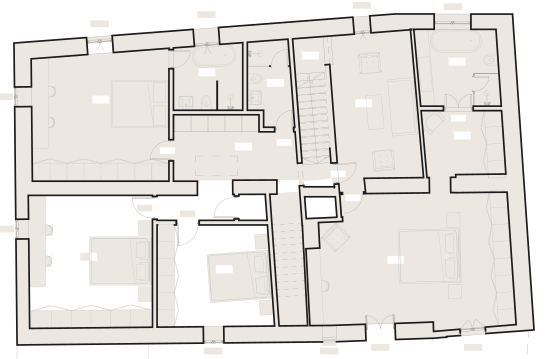

For sale · Felanitx, Mallorca
Can Vaquer
A Mallorcan townhouse of eight bedrooms, restored in lime, stone and old timber around a private courtyard with a pool.

The house
Restored by hand, room by room
Can Vaquer is a traditional townhouse in Felanitx, a market town in the south-east of Mallorca. The renovation keeps what made it: tall rooms under dark timber beams, walls of local stone, deep window reveals with wooden shutters, and handmade terracotta floors laid on the diagonal.
The new work is quiet and exact. Walls are finished in lime plaster, bathrooms are lined in glazed handmade tiles and pale stone, and the taps are brushed bronze. Out in the courtyard, a sandstone arcade, a lemon tree, a clementine tree and a vine surround the new pool.
Renovation in progress. Completion expected May 2027
- Marès sandstoneArches and arcade around the courtyard
- Lime plasterBreathable, hand-trowelled walls
- Timber beamsOriginal ceilings, kept and restored
- Terracotta floorsHandmade tiles by Can Benito, laid on the diagonal
- Glazed handmade tilesShowers and bathroom walls
- Brushed bronzeTaps, shower sets and bath filler
Features
What the house offers
- Bedrooms
- 8
- Bathrooms
- 7
- Built area
- ≈ 700 m²
- Plot
- 393 m²
- Floors
- 5
- Completion
- May 2027
The house
- 8 bedrooms and 7 bathrooms
- About 700 m² built across five floors
- 393 m² plot in the historic centre of Felanitx
- Full renovation, completing May 2027
- Two garages for parking
- Wine cellar for over 200 bottles
- Cheese cave and humidor
- Storerooms and a plant room
Living spaces
- Entrance hall, sitting room, TV room and study
- Kitchen with pantry, dining room and formal dining room
- Second formal dining room and kitchenette on the first floor
- Further living rooms on the first and second floors
Bedrooms and bathrooms
- Two main bedroom suites with dressing rooms and en-suite bathrooms
- Walk-in showers in handmade glazed tile
- Freestanding bath with a brushed bronze filler
- Electric underfloor heating in the bathrooms
- Guest WC on the ground floor
Outdoors
- Private courtyard with a swimming pool
- Sandstone arcade with an outdoor dining area
- Lemon tree, clementine tree and a vine
- Sun terrace beside the pool
- Roof terrace with panoramic views
- Irrigation system fed from underground rainwater storage tanks
Craft and materials
- Original timber beams and local stone walls
- Lime-plastered walls
- Handmade terracotta floor tiles by Can Benito
- Handmade stone sinks by d’Aigo Mallorca
- Wooden shutters and deep window reveals
- Brushed bronze taps and fittings
Systems
- Air source heat pump for heating and cooling
- Heat pump cylinders for domestic hot water
- Whole-house water filtration and softening
- Mains water storage and pressurisation system
- Three-phase electricity with provision for electric vehicle charging up to 27 kW
- Fibre to the premises available in the street, up to 2 Gbit/s
- Cat7 cabling to multiple Wi-Fi 7 access points throughout
- Energy rating To confirm
Rooms and details
A walk through the house
Photographs taken during the final stage of renovation. Finished photography will follow.
Floor plans
The layout, floor by floor

Garage15.0 m² Storeroom24.4 m² Plant room9.4 m² Storeroom- RoomDimensionsArea
- Storeroom— × — m24.4 m²
- Garage— × — m15.0 m²
- Plant room— × — m9.4 m²
- Storeroom— × — m–

Study18.0 m² TV room18.4 m² Entrance hall19.6 m² Dining room18.5 m² Formal dining room16.4 m² Kitchen16.5 m² Storeroom6.8 m² Pantry8.5 m² WC Sitting room24.6 m²- RoomDimensionsArea
- Sitting room— × — m24.6 m²
- Entrance hall— × — m19.6 m²
- Dining room— × — m18.5 m²
- TV room— × — m18.4 m²
- Study— × — m18.0 m²
- Kitchen— × — m16.5 m²
- Formal dining room— × — m16.4 m²
- Pantry— × — m8.5 m²
- Storeroom— × — m6.8 m²
- WC— × — m–

Formal dining room23.4 m² Living room18.3 m² Bedroom26.7 m² Bedroom Main bedroom15.7 m² Bathroom Bathroom Kitchen5.7 m² Living room15.8 m² Dressing room5.7 m² Main bathroom5.3 m² Shower room2.6 m²- RoomDimensionsArea
- Bedroom— × — m26.7 m²
- Formal dining room— × — m23.4 m²
- Living room— × — m18.3 m²
- Living room— × — m15.8 m²
- Main bedroom— × — m15.7 m²
- Kitchen— × — m5.7 m²
- Dressing room— × — m5.7 m²
- Main bathroom— × — m5.3 m²
- Shower room— × — m2.6 m²
- Bedroom— × — m–
- Bathroom— × — m–
- Bathroom— × — m–

Bedroom9.5 m² Bedroom15.2 m² Main bedroom32.1 m² Bedroom22.5 m² Living room15.7 m² Dressing room6.4 m² Bathroom8.0 m² Stair6.0 m² Bathroom5.6 m² Bathroom4.4 m² Landing9.5 m²- RoomDimensionsArea
- Main bedroom— × — m32.1 m²
- Bedroom— × — m22.5 m²
- Living room— × — m15.7 m²
- Bedroom— × — m15.2 m²
- Bedroom— × — m9.5 m²
- Landing— × — m9.5 m²
- Bathroom— × — m8.0 m²
- Dressing room— × — m6.4 m²
- Stair— × — m6.0 m²
- Bathroom— × — m5.6 m²
- Bathroom— × — m4.4 m²
Indicative plans, not to scale. Room sizes are approximate and the final layout may differ.
Key facts
At a glance
| Bedrooms | 8 |
|---|---|
| Bathrooms | 7 |
| Built area | ≈ 700 m² |
| Plot | 393 m² |
| Floors | 5 |
| Outdoor space | Courtyard with pool, stone arcade, lemon and clementine trees and a vine; roof terrace |
| Condition | Full renovation, nearing completion |
| Energy rating | To confirm |
| Price | Around €2.5m |
Location
Felanitx, Mallorca
Felanitx is a working Mallorcan town in the south-east of the island, known for its Sunday market, its vineyards and wineries, and the hilltop sanctuary of Sant Salvador that looks out over the plain to the sea.
The harbour and coves of Portocolom are a short drive away, and Palma and its airport are within easy reach for year-round living.
- Portocolom≈ 12 km
- Palma airport≈ 45 km
- Palma≈ 50 km
- Nearest beaches≈ 12 km
Distances are approximate, by road.
Viewings
Arrange a private viewing
Viewings are by appointment. Send an enquiry and we will be in touch to arrange a time.